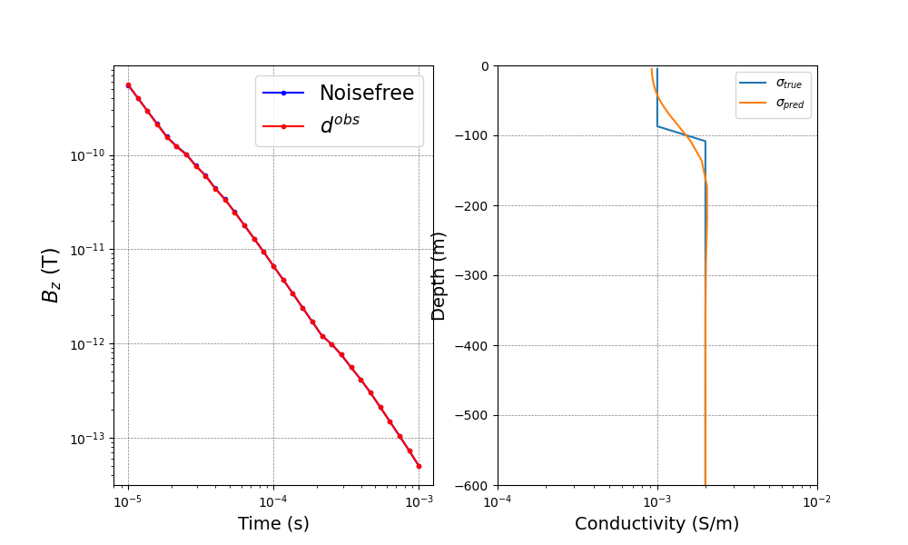

Note
Click here to download the full example code
EM: TDEM: 1D: Inversion¶
Here we will create and run a TDEM 1D inversion.
Out:
/usr/share/miniconda/envs/deploy/lib/python3.7/site-packages/pymatsolver/direct.py:26: PardisoTypeConversionWarning:
Converting csc_matrix matrix to CSR format, will slow down.
/usr/share/miniconda/envs/deploy/lib/python3.7/site-packages/pymatsolver/direct.py:73: PardisoTypeConversionWarning:
Converting csc_matrix matrix to CSR format, will slow down.
SimPEG.InvProblem will set Regularization.mref to m0.
SimPEG.InvProblem is setting bfgsH0 to the inverse of the eval2Deriv.
***Done using same Solver and solverOpts as the problem***
model has any nan: 0
============================ Inexact Gauss Newton ============================
# beta phi_d phi_m f |proj(x-g)-x| LS Comment
-----------------------------------------------------------------------------
x0 has any nan: 0
0 9.59e+02 2.63e+03 0.00e+00 2.63e+03 3.28e+03 0
1 9.59e+02 1.97e+02 8.25e-02 2.76e+02 5.06e+02 0
2 1.92e+02 2.25e+01 1.50e-01 5.13e+01 1.36e+02 0 Skip BFGS
3 1.92e+02 1.96e+00 1.86e-01 3.76e+01 1.65e+01 0 Skip BFGS
4 3.83e+01 1.83e+00 1.83e-01 8.84e+00 3.16e+01 0 Skip BFGS
5 3.83e+01 2.16e-01 1.95e-01 7.71e+00 1.52e+00 0
------------------------- STOP! -------------------------
1 : |fc-fOld| = 1.1241e+00 <= tolF*(1+|f0|) = 2.6303e+02
1 : |xc-x_last| = 8.9019e-02 <= tolX*(1+|x0|) = 3.0149e+00
0 : |proj(x-g)-x| = 1.5155e+00 <= tolG = 1.0000e-01
0 : |proj(x-g)-x| = 1.5155e+00 <= 1e3*eps = 1.0000e-02
1 : maxIter = 5 <= iter = 5
------------------------- DONE! -------------------------
import numpy as np
from SimPEG.electromagnetics import time_domain
from SimPEG import (
optimization,
discretize,
maps,
data_misfit,
regularization,
inverse_problem,
inversion,
directives,
utils,
)
import matplotlib.pyplot as plt
def run(plotIt=True):
cs, ncx, ncz, npad = 5.0, 25, 15, 15
hx = [(cs, ncx), (cs, npad, 1.3)]
hz = [(cs, npad, -1.3), (cs, ncz), (cs, npad, 1.3)]
mesh = discretize.CylMesh([hx, 1, hz], "00C")
active = mesh.vectorCCz < 0.0
layer = (mesh.vectorCCz < 0.0) & (mesh.vectorCCz >= -100.0)
actMap = maps.InjectActiveCells(mesh, active, np.log(1e-8), nC=mesh.nCz)
mapping = maps.ExpMap(mesh) * maps.SurjectVertical1D(mesh) * actMap
sig_half = 2e-3
sig_air = 1e-8
sig_layer = 1e-3
sigma = np.ones(mesh.nCz) * sig_air
sigma[active] = sig_half
sigma[layer] = sig_layer
mtrue = np.log(sigma[active])
rxOffset = 1e-3
rx = time_domain.Rx.PointMagneticFluxTimeDerivative(
np.array([[rxOffset, 0.0, 30]]), np.logspace(-5, -3, 31), "z"
)
src = time_domain.Src.MagDipole([rx], location=np.array([0.0, 0.0, 80]))
survey = time_domain.Survey([src])
time_steps = [(1e-06, 20), (1e-05, 20), (0.0001, 20)]
simulation = time_domain.Simulation3DElectricField(
mesh, sigmaMap=mapping, survey=survey, time_steps=time_steps
)
# d_true = simulation.dpred(mtrue)
# create observed data
rel_err = 0.05
data = simulation.make_synthetic_data(mtrue, relative_error=rel_err)
dmisfit = data_misfit.L2DataMisfit(simulation=simulation, data=data)
regMesh = discretize.TensorMesh([mesh.hz[mapping.maps[-1].indActive]])
reg = regularization.Tikhonov(regMesh, alpha_s=1e-2, alpha_x=1.0)
opt = optimization.InexactGaussNewton(maxIter=5, LSshorten=0.5)
invProb = inverse_problem.BaseInvProblem(dmisfit, reg, opt)
# Create an inversion object
beta = directives.BetaSchedule(coolingFactor=5, coolingRate=2)
betaest = directives.BetaEstimate_ByEig(beta0_ratio=1e0)
inv = inversion.BaseInversion(invProb, directiveList=[beta, betaest])
m0 = np.log(np.ones(mtrue.size) * sig_half)
simulation.counter = opt.counter = utils.Counter()
opt.remember("xc")
mopt = inv.run(m0)
if plotIt:
fig, ax = plt.subplots(1, 2, figsize=(10, 6))
ax[0].loglog(rx.times, -invProb.dpred, "b.-")
ax[0].loglog(rx.times, -data.dobs, "r.-")
ax[0].legend(("Noisefree", "$d^{obs}$"), fontsize=16)
ax[0].set_xlabel("Time (s)", fontsize=14)
ax[0].set_ylabel("$B_z$ (T)", fontsize=16)
ax[0].set_xlabel("Time (s)", fontsize=14)
ax[0].grid(color="k", alpha=0.5, linestyle="dashed", linewidth=0.5)
plt.semilogx(sigma[active], mesh.vectorCCz[active])
plt.semilogx(np.exp(mopt), mesh.vectorCCz[active])
ax[1].set_ylim(-600, 0)
ax[1].set_xlim(1e-4, 1e-2)
ax[1].set_xlabel("Conductivity (S/m)", fontsize=14)
ax[1].set_ylabel("Depth (m)", fontsize=14)
ax[1].grid(color="k", alpha=0.5, linestyle="dashed", linewidth=0.5)
plt.legend(["$\sigma_{true}$", "$\sigma_{pred}$"])
if __name__ == "__main__":
run()
plt.show()
Total running time of the script: ( 0 minutes 12.003 seconds)
Estimated memory usage: 9 MB